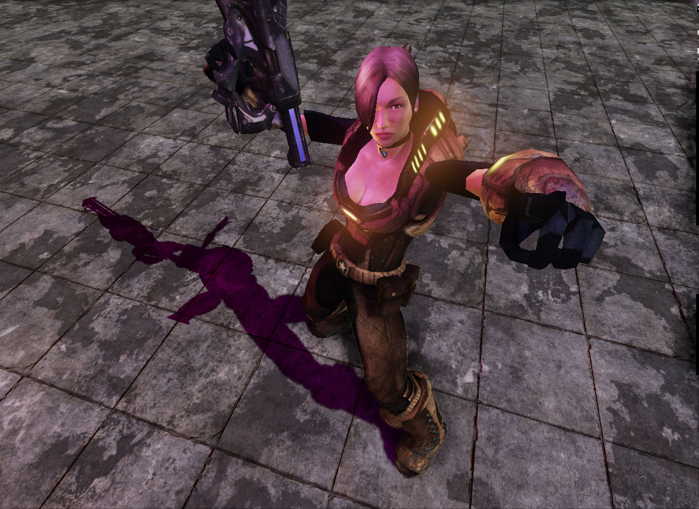
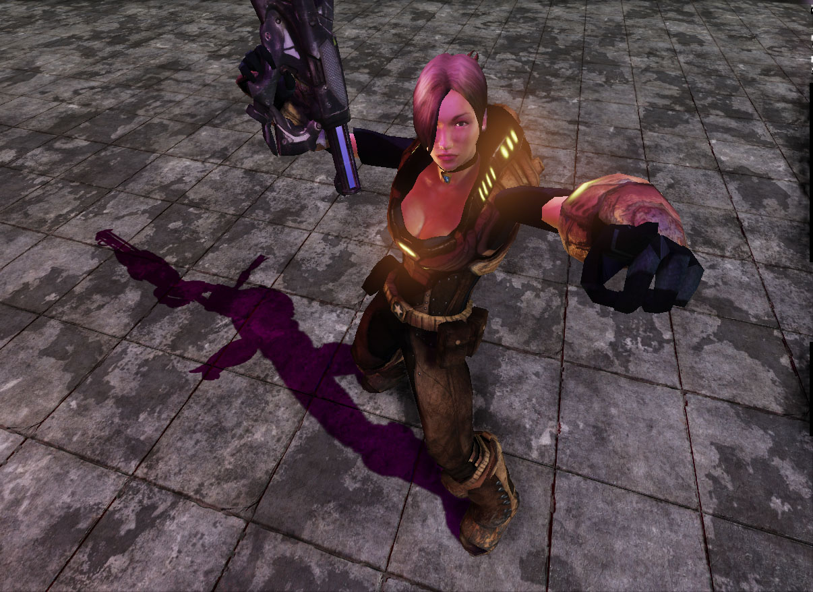
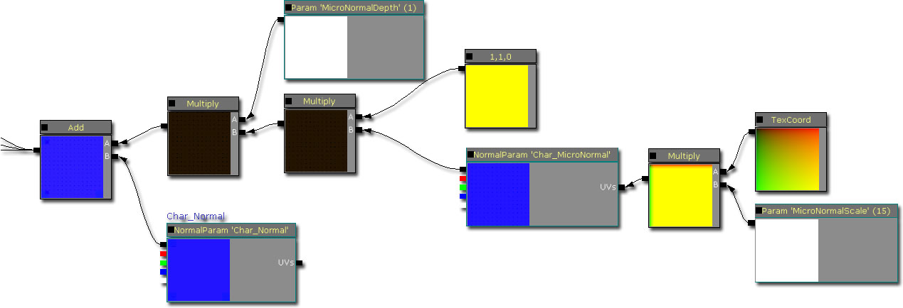
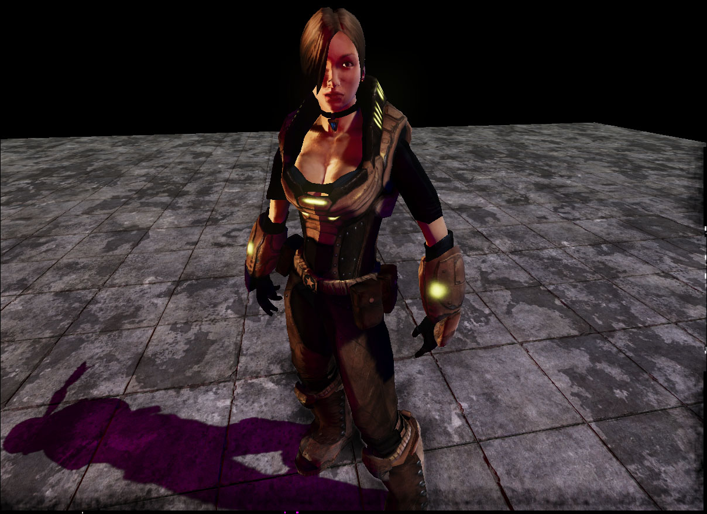
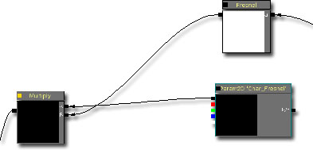
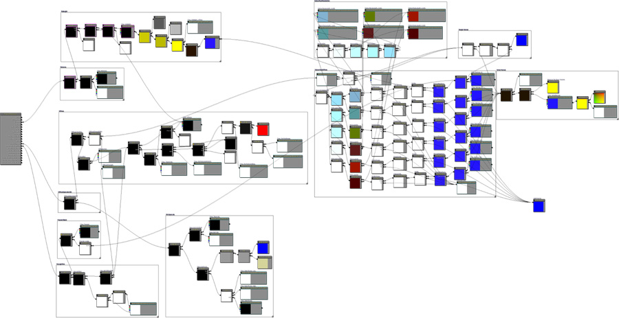
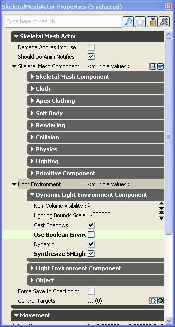
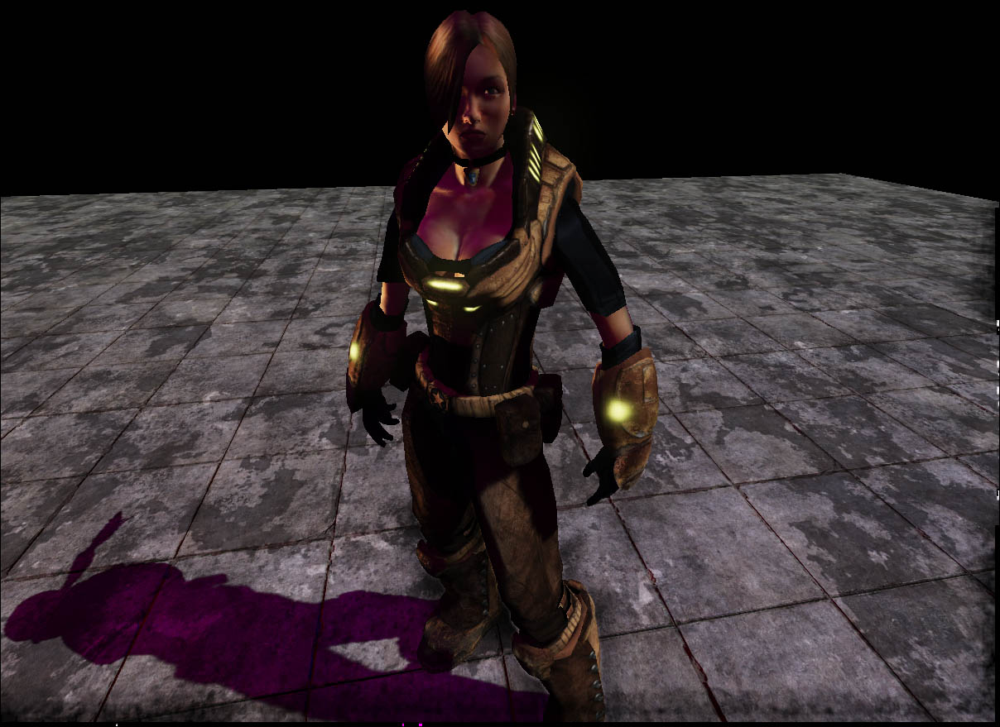
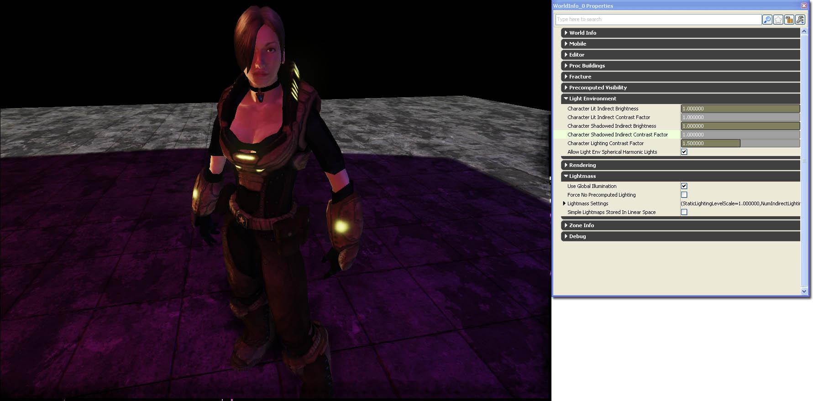

UDN
Search public documentation:
DevelopmentKitGemsCharacterLightingJP
English Translation
中国翻译
한국어
Interested in the Unreal Engine?
Visit the Unreal Technology site.
Looking for jobs and company info?
Check out the Epic games site.
Questions about support via UDN?
Contact the UDN Staff
中国翻译
한국어
Interested in the Unreal Engine?
Visit the Unreal Technology site.
Looking for jobs and company info?
Check out the Epic games site.
Questions about support via UDN?
Contact the UDN Staff
UE3 ホーム > Unreal Development Kit Gems > キャラクターの光源処理
UE3 ホーム > 光源処理とシャドウ > キャラクターの光源処理
UE3 ホーム > キャラクターアーティスト > キャラクターの光源処理
UE3 ホーム > 光源処理とシャドウ > キャラクターの光源処理
UE3 ホーム > キャラクターアーティスト > キャラクターの光源処理
キャラクターの光源処理
2011年6月に UDK に即して最終テスト実施済みPC 対応
- キャラクターの光源処理
- 概要
- 骨格メッシュのコンポーネントを調整する
- マテリアルの調整
- 動的なライト環境の調整
- World Info キャラクター ライト環境の調整
- Character Lit Indirect Brightness (キャラクター光源処理 間接的輝度)
- Character Lit Indirect Contrast Factor (キャラクター光源処理 間接的コントラスト係数)
- Character Shadowed Indirect Brightness (キャラクター シャドウイング 間接的輝度)
- Character Shadowed Indirect Contrast Factor (キャラクター シャドウイング 間接的コントラスト係数)
- Allow Light Env Spherical Harmonic Lights (ライト環境 球面調和光源 機能)
- 全体的な調整
概要
骨格メッシュのコンポーネントを調整する

ところが、骨格メッシュに物理アセットが割り当てられている次のスクリーンショットでは、投じられている影がよりシャープかつ明確になっている上、骨格メッシュのサーフェス上の光源処理全体が向上しています。
関連テーマ
マテリアルの調整
ディテール法線マップを追加する
サブ ピクセル レベルで質を高めるには、まず、ディテール法線マップを追加することから始めるのが簡単です。法線マップは常に解像度をもち、光源処理の計算はこの解像度に依存します。プレイヤーがマテリアルに接近した場合、法線マップが線形にフィルターをかけられる可能性があります。その結果、光源処理は粗悪になります。ディテール法線マップを用いると、この問題を軽減することができます。 ディテール法線マップを追加するには、次のようにします。ディテール法線テクスチャに係数を乗じてスケーリングします。通常、係数は 10～15 が適当です。ディテール法線マップに、青チャンネルを 0 にしたベクター Constant(1, 1, 0) を乗じます。さらに、これに係数を乗じることによって、ディテール法線マップの深度を調整します。最後に、一連の結果を法線マップに追加します。
次のスクリーンショットにおいて、キャラクター上で使用されているマテリアルにはディテール法線マップがありません。
次のスクリーンショットのマテリアルには、ディテール法線マップが追加されています。そのため、防具のいくつかの部分と肌のサーフェス上の一部で、光源処理が洗練されていることが分かります。フレネルマップを追加する
フレネルマップによってキャラクターに間接的なリムライトを追加することができるようになります。スキンのレンダリングには表面下散乱 (サブサーフェス スキャタリング) がよく使用されることを考慮すれば、間接的な光源処理は、スキン シェーディングにとって重要です。表面下散乱の一要素として、オブジェクトの縁がごくわずかにライティングされるということがあります。 フレネルマップを追加するには、フレネルの結果にフレネルマップを乗じます。フレネル法線は、キャラクターのために使用する法線マップです。フレネルマップは、単に、使用すべき色です。したがって、フレネルマップにベクター パラメータを乗じることによって、カラー化されたフレネル光源処理を行うこともできます。この場合、フレネルマップはグレイスケール バージョンのディフューズです。
次のスクリーンショットでは、マテリアルにフレネルマップがありません。 次のスクリーンショットでは、マテリアルにフレネルマップが追加されています。人工的なリムライトを得られたことが分かります。これによって、スキンの外見に輝きが増し、ほとんど油性的にすらなっています。また、ハイライトを加えてシャドウを引き立てることによって、メッシュのボリューム感を増しています。
関連するテーマ
カスタムの光源処理
キャラクター上に独自の光源処理を実装することによって、かなり異なる効果を得ることも可能です。 このマテリアルでは、表面下散乱が使用されていますが、これは、nVidia 社による表面下散乱の研究に基づいて Miguel A Santiago Jr. が開発したものです。次は、そのために作成されたマテリアルです。表面下散乱の諸要素と標準的な「Unreal Engine 3」キャラクターマテリアルの一部を実装しています。サムネイルをクリックすると、マテリアルのレイアウト全体が表示されます。
次のスクリーンショットでは、標準的な「Unreal Engine 3」キャラクターマテリアルが使用されています。
次のスクリーンショットでは、新しい表面下散乱が有効になったマテリアルを使用しています。

動的なライト環境の調整
Use Boolean Environment Shadowing (bool 型環境シャドウイングを使用する)
これを無効にすると、シャドウイングの質は向上しますが、パフォーマンスへの負荷がかかります。有効にすると、環境から負荷が小さいシャドウイングを使用することになります。 次のスクリーンショットでは、骨格メッシュのコンポーネントのライト環境が、bool 型環境シャドウイングを有効にしています。
次のスクリーンショットでは、骨格メッシュのコンポーネントのライト環境が、bool 型環境シャドウイングを有効にしています。
 次のスクリーンショットでは、骨格メッシュのコンポーネントのライト環境が、bool 型環境シャドウイングを無効にしています。影がより明確になり、正確さも向上しています。
次のスクリーンショットでは、骨格メッシュのコンポーネントのライト環境が、bool 型環境シャドウイングを無効にしています。影がより明確になり、正確さも向上しています。
Synthesize SH Light (球面調和光源の合成)
これを有効にすると、合成された平行光源によって考慮されなかったすべての光源について、球面調和光源が合成されます。その結果、より優秀な光源処理がもたらされますが、負荷の増大は急になります。
次のスクリーンショットでは、骨格メッシュのコンポーネントのライト環境が、Synthesize SH Light (球面調和光源の合成) を無効にしています。光源処理はそれほど拙くありません。残念なことに、シーン内の赤と青の光源がマージされていますが、これは正しくありません。
次のスクリーンショットでは、骨格メッシュのコンポーネントのライト環境が、Synthesize SH Light (球面調和光源の合成) を有効にしています。シーン内の赤と青の光源が、キャラクター上で別個に処理されています。
関連するテーマ
World Info キャラクター ライト環境の調整
Character Lit Indirect Brightness (キャラクター光源処理 間接的輝度)
あらゆるドミナントライトによって光源処理されたキャラクターライト環境の間接的な光源を、強めたり弱めたりします。これを使用することによって、キャラクターの全体的な輝度を一様に強めたり弱めたりします。

Character Lit Indirect Contrast Factor (キャラクター光源処理 間接的コントラスト係数)
あらゆるドミナントライトによって光源処理されたキャラクターライト環境の間接的な光源コントラストを、強めたり弱めたりします。これを使用すると、係数によって明るい部分を強めることができるようになるとともに、係数によって暗い部分を弱めることができるようになります。これによって、キャラクターの全体的なボリューム感を出し、形をはっきりさせることができます。

Character Shadowed Indirect Brightness (キャラクター シャドウイング 間接的輝度)
すべてのドミナントライトによって現在シャドウイングされているキャラクターライト環境の間接的な光源を、強めたり弱めたりします。 これを使用すると、シャドウの中にいるキャラクターの全体的な輝度を一様に増加することができます。シャドウの中でキャラクターが暗くなりすぎた場合に役立ちます。

Character Shadowed Indirect Contrast Factor (キャラクター シャドウイング 間接的コントラスト係数)
すべてのドミナントライトによって現在シャドウイングされているキャラクターライト環境の間接的な光源コントラストを、強めたり弱めたりします。これを使用すると、係数によって明るい部分を強めることができるようになるとともに、係数によって暗い部分を弱めることができるようになります。これによって、キャラクターの全体的なボリューム感を出し、形をはっきりさせることができます。キャラクターがシャドウの中で暗くなり、平坦に見える場合に役立ちます。

Allow Light Env Spherical Harmonic Lights (ライト環境 球面調和光源 機能)
動的ライト環境が球面調和光源を合成する機能を有効 / 無効にする、グローバルな bool 型です。 球面調和光源を有効 / 無効にします。 次のスクリーンショットでは、骨格メッシュコンポーネントが球面調和光源を合成が有効になっています。パフォーマンスが犠牲になりますが、見栄えが良くなりました。
次のスクリーンショットでは、骨格メッシュコンポーネントが球面調和光源を合成が無効になっています。見栄えは先ほどよりも劣りますが、パフォーマンスは向上しています。
次のスクリーンショットでは、骨格メッシュコンポーネントが球面調和光源を合成が有効になっています。パフォーマンスが犠牲になりますが、見栄えが良くなりました。
次のスクリーンショットでは、骨格メッシュコンポーネントが球面調和光源を合成が無効になっています。見栄えは先ほどよりも劣りますが、パフォーマンスは向上しています。

全体的な調整
次のスクリーンショットでは、ワールド キャラクターの光源処理設定項目が調整されていません。
次のスクリーンショットでは、ワールド キャラクターの光源処理設定項目が調整されているため、新たな光源をシーンに加えなくても、キャラクターのボリューム感がより良く表現されています。